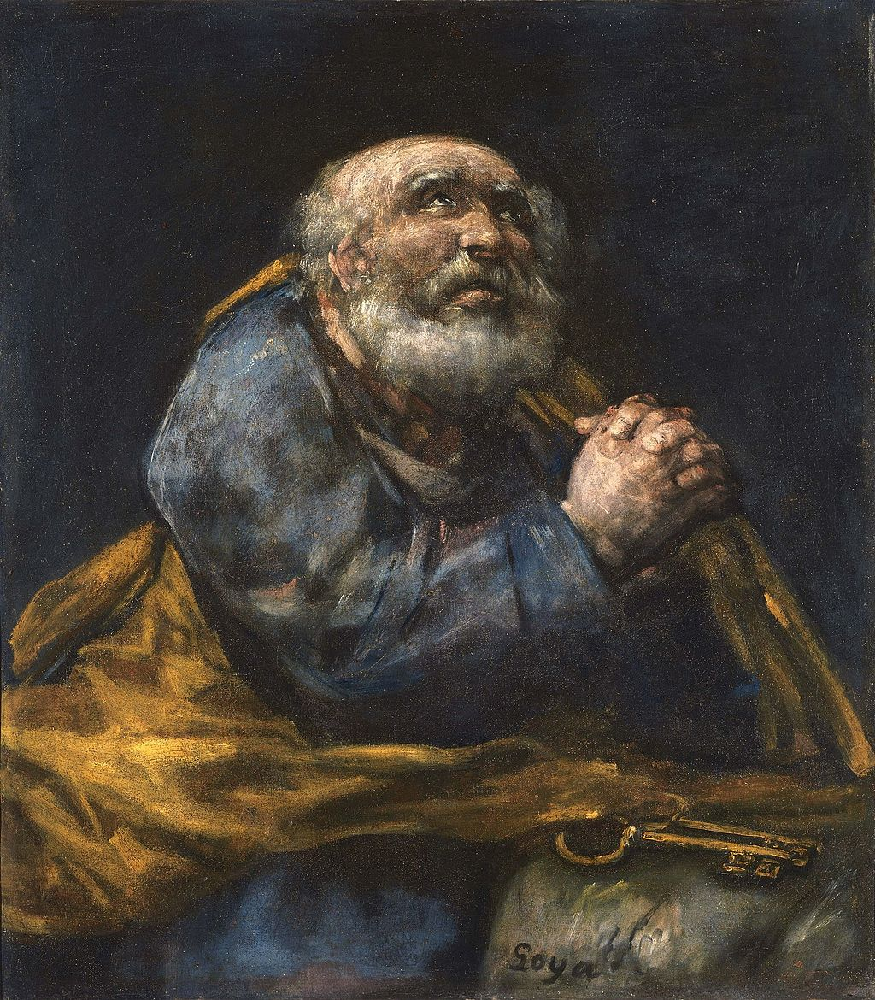

<head>
<meta charset="UTF-8" />
<meta name="keywords" content="drawing, painting" />
<meta name="description" content="drawings by Sunjy" />
<title>Sunjy</title>
<link rel="shortcut icon" type="image/x-icon" href="../../mImages/mCommon/favicon.ico" media="screen" />
<link rel="stylesheet" type="text/css" href="../../mCsses/mCommon/mCssA.css" />
<link rel="stylesheet" type="text/css" href="../../mCsses/mCommon/mCssB.css" />
<link rel="stylesheet" type="text/css" href="../../mCsses/mCommon/mCssC.css" />
<link rel="stylesheet" type="text/css" href="../../mCsses/mCommon/mCssD.css" />
<link rel="stylesheet" type="text/css" href="../../mCsses/mContent/mCssA.css" />
<link rel="stylesheet" type="text/css" href="../../mCsses/mContent/mCssB.css" />
<link rel="stylesheet" type="text/css" href="../../mCsses/mContent/mCssC.css" />
<link rel="stylesheet" type="text/css" href="../../mCsses/mContent/mCssD.css" />
</head>
<script type="text/javascript" src="../../mScripts/mContent/mContentAA.js" /></script>
<script type="text/javascript" src="../../mScripts/mContent/mContentAB.js" /></script>
<script type="text/javascript" src="../../mScripts/mContent/mContentAC.js" /></script>
<script type="text/javascript" src="../../mScripts/mContent/mContentAD.js" /></script>
<script type="text/javascript"></script> 
<script type="text/javascript">
document.write('<div class="mImgAbsolute"></div>');
/*
document.write('<p class="mFontSizeBColor" />From a white paper...</p>');
document.write('<table class="center"><tr><td>');
document.write('');
document.write('</td></tr></table>');
*/
</script>


<script type="text/javascript">
document.write('<p class="mFontSizeBColor" />The Repentant St. Peter</p>');
document.write('<p class="mFontSizeSColor" />“The Repentant St. Peter” by Francisco Goya shows the saint in tearful repentance with the “Keys of Heaven.” In this painting, St Peter raises his tear-filled eyes to Heaven, and his hands are joined in prayer. <br><br>This image of St Peter is reminiscent of the earlier El Greco paintings, which also show the saint with white hair and beard, and his yellow cloak over a blue tunic. <br><br>In the Goya’s version, the saint is shown balder and much heavier set than the El Greco elongated and austere depictions. <br><br>Goyer painted this image four years before his death, during a period of seclusion when his work became progressively darker and pessimistic. <br><br>In Goya’s late period, he was disillusioned by the political and social developments in Spain, and he lived in near isolation. Goya eventually abandoned Spain in 1824 to retire to the French city of Bordeaux.<br><br>Tearful Saint Peter<br><br>During El Greco’s time, the tearful Saint Peter was used by theologians of the Counter-Reformation as a way of drawing a parallel between the saint’s weakness and mortal man.<br><br>The tearful image was used to elicit an emotional response from the believer to the image and the church. Saint Peter (30 AD to 64-68 AD) was also known as Simon Peter.<br><br>He was one of the Twelve Apostles of Jesus Christ and is traditionally regarded as the first Bishop of Rome‍. He is venerated as a major saint and as the founder of the Roman Church. In the Gospel of Matthew 16:19, Jesus says to Peter:<br><br>“I will give you the keys of the kingdom of heaven, and whatever you bind on Earth shall be bound in heaven, and whatever you loose on Earth shall be loosed in heaven.”<br><br>The “keys of heaven” or the “keys of Saint Peter” are seen as a symbol of papal authority. The crossed keys in the coat of arms of the Holy See symbolize the keys of heaven entrusted to Simon Peter.<br><br>Saint Peter is often depicted in Roman Catholic and Eastern Orthodox paintings and other artwork as holding a key or a set of keys.<br><br>The general layout of St Peter’s Basilica also is roughly key-shaped; evocative of the keys entrusted to Saint Peter. Since the 16th century, a symbolical pair of keys is created for every pope and buried on death with him.<br></p>');
document.write('<table class="center" /><tr><td>');
document.write('<br>This image of St Peter is reminiscent of the earlier El Greco paintings, which also show the saint with white hair and beard, and his yellow cloak over a blue tunic. <br><br>In the Goya’s version, the saint is shown balder and much heavier set than the El Greco elongated and austere depictions. <br><br>Goyer painted this image four years before his death, during a period of seclusion when his work became progressively darker and pessimistic. <br><br>In Goya’s late period, he was disillusioned by the political and social developments in Spain, and he lived in near isolation. Goya eventually abandoned Spain in 1824 to retire to the French city of Bordeaux.<br><br>Tearful Saint Peter<br><br>During El Greco’s time, the tearful Saint Peter was used by theologians of the Counter-Reformation as a way of drawing a parallel between the saint’s weakness and mortal man.<br><br>The tearful image was used to elicit an emotional response from the believer to the image and the church. Saint Peter (30 AD to 64-68 AD) was also known as Simon Peter.<br><br>He was one of the Twelve Apostles of Jesus Christ and is traditionally regarded as the first Bishop of Rome‍. He is venerated as a major saint and as the founder of the Roman Church. In the Gospel of Matthew 16:19, Jesus says to Peter:<br><br>“I will give you the keys of the kingdom of heaven, and whatever you bind on Earth shall be bound in heaven, and whatever you loose on Earth shall be loosed in heaven.”<br><br>The “keys of heaven” or the “keys of Saint Peter” are seen as a symbol of papal authority. The crossed keys in the coat of arms of the Holy See symbolize the keys of heaven entrusted to Simon Peter.<br><br>Saint Peter is often depicted in Roman Catholic and Eastern Orthodox paintings and other artwork as holding a key or a set of keys.<br><br>The general layout of St Peter’s Basilica also is roughly key-shaped; evocative of the keys entrusted to Saint Peter. Since the 16th century, a symbolical pair of keys is created for every pope and buried on death with him.<br>" />');
document.write('</td></tr></table>');
</script>


